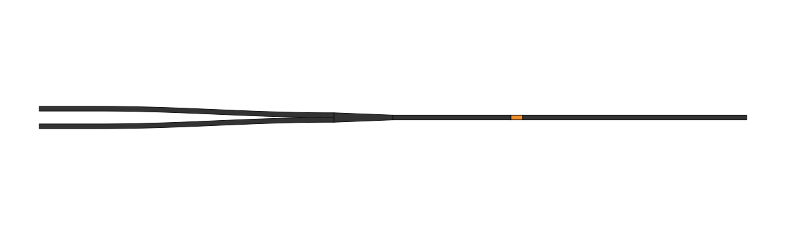
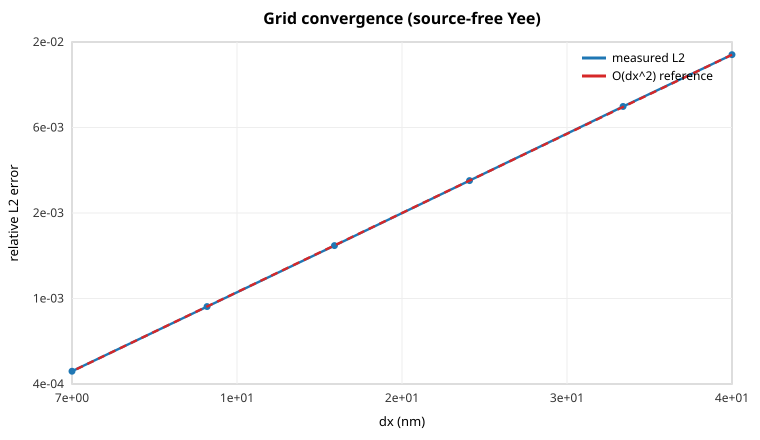

EM-FDTD Tutorial
The general electromagnetic FDTD layer works identically in 1-D, 2-D and 3-D through the same Simulation / run! API. All outputs below are produced on CPU with Julia 1.12.
1-D: pulse propagation and CPML absorption
using MagnetoPhotonic
p = FDTDParams()
pulse = GaussianPulse(; amplitude=1.0, tau=4e-15, t0=16e-15, omega=2pi*p.c0/800e-9)
sim = Simulation(; cell=(4e-6,), dx=10e-9, dimension=1,
sources=[PointSource(pulse, :Ez, 2e-6)], boundary=PML(20), courant=0.5)
mon = PointMonitor(:Ez, 3e-6)
run!(sim; until=120e-15, monitors=[mon])steps=14390 peak |Ez| @ probe = 1.942 energy final/peak = 3.58e-22PML(20) is a 20-cell CFS-CPML layer. After the pulse exits, the residual domain energy is ~1e-22 of the peak — the boundary is genuinely absorbing (with PEC() the energy would be retained and bounce indefinitely).
2-D: TM/TE modes and sources
mode=:TM evolves (Ez, Hx, Hy); mode=:TE evolves (Hz, Ex, Ey). Two source types cover most experiments: a PointSource (a single driven cell) and a PlaneSource (a transverse current sheet — a line in 2-D — launching a plane wave normal to axis).
A point source radiating from the center
A GaussianPulse is a sine wave modulated by a Gaussian envelope. Driving one central cell with it sends out an expanding train of cylindrical wavefronts — a "ripple in a pond" — cleanly absorbed by the CPML on every side (examples/point_source_2d.jl):
pw = GaussianPulse(; amplitude=1.0, tau=20e-15, t0=30e-15, omega=2pi*p.c0/700e-9)
sim = Simulation(; cell=((0.0,4e-6),(0.0,4e-6)), dx=20e-9, dimension=2, mode=:TM,
sources=[PointSource(pw, :Ez, (2e-6, 2e-6))], # source in the MIDDLE
boundary=PML(10), courant=0.45)
frames = FieldMonitor(:Ez; every=25)
run!(sim, 1300; monitors=[frames])
A plane wave diffracting through a single slit
Place an opaque wall across the middle of the domain with a sub-wavelength slit, and a plane wave passing through it spreads into Huygens semicircular wavefronts — the textbook diffraction demonstration. The wall is made perfectly reflecting (PEC) by forcing Ez = 0 in the barrier cells every step via the run! callback (examples/slit_diffraction_2d.jl):
pw = GaussianPulse(; amplitude=1.0, tau=8e-15, t0=24e-15, omega=2pi*p.c0/700e-9)
sim = Simulation(; cell=((0.0,4e-6),(0.0,3e-6)), dx=20e-9, dimension=2, mode=:TM,
sources=[PlaneSource(pw, :Ez; axis=:x, position=0.5e-6)],
boundary=PML(10), courant=0.45)
# opaque wall at x≈2 µm with a 0.4 µm slit at the center (Ez forced to 0 each step)
xs, ys = sim.grid.x.centers, sim.grid.y.centers
mask = [1.95e-6 <= x <= 2.05e-6 && !(1.30e-6 <= y <= 1.70e-6) for x in xs, y in ys]
run!(sim, 2200; callback = s -> (s.fields.Ez[mask] .= 0.0))
- A
FieldMonitorstores field slices everyeverysteps, e.g. for an animation. With the optionalCairoMakieextension,render_field_video(frames.frames, "out.mp4")writes a video.
3-D: full Yee with CPML
sp = GaussianPulse(; amplitude=1.0, tau=2e-15, t0=8e-15, omega=2pi*p.c0/800e-9)
sim = Simulation(; cell=(1e-6, 1e-6, 1e-6), dx=40e-9, dimension=3,
sources=[PointSource(sp, :Ez, (0.5e-6, 0.5e-6, 0.5e-6))],
boundary=PML(8), courant=0.35)
run!(sim, 4000)grid = (25, 25, 25) energy final/peak = 8.9e-10Materials and geometry
Build a Scene of shapes, each paired with a Material. Materials accept a refractive index, an explicit epsr, or Drude–Lorentz poles for dispersion.
scene = Scene()
add_shape!(scene, Box(1e-6, 2e-6, -1, 1, -1, 1), Material("n=2 slab"; index=2.0))
sim = Simulation(; cell=(3e-6,), dx=5e-9, dimension=1, geometry=scene,
sources=[PointSource(pulse, :Ez, 0.4e-6)], boundary=PML(20))Shape primitives: Box, PolygonShape, Waveguide, TaperedWaveguide, Cylinder, Letter. A device library is included — not_gate_60um, passive_waveguide, hm_test_pattern — with OBJ/SVG export:
dev = not_gate_60um()
write_device_obj("device.obj", dev.scene)
write_plan_svg("device.svg", dev.scene)
Declarative waveguide devices
Production-style devices can be assembled from path segments rather than hand-rasterized geometry. Film segments attach the actual physics model to the active material, so the rasterized material_cells are immediately ready for coupled EM + magnetization updates:
model = MagnetoOpticModel(preset=:gdfeco)
core = Material("Si3N4"; epsr=FDTDParams(800e-9).epsr_si3n4)
dev = waveguide_device(
straight((0.0, 0.0), (20e-6, 0.0); width=0.40e-6),
film_region(20e-6, 20.008e-6; width=0.40e-6);
core=core, film_model=model, height=0.40e-6,
)not_gate_60um(; model=MagnetoOpticModel()) is now a thin preset over the same builder and preserves its legacy return keys (scene, paths, polygons, x_film_start, x_film_end, wg_width, wg_height).
Graded meshes and mode sources
GridConfig(mesh=:graded) refines the propagation axis around a film region and smoothly coarsens back to the coarse dx using stretch_ratio. init_state derives the film region from a device builder result when one is passed to run_experiment:
cfg = SimConfig(
grid = GridConfig(mesh=:graded, dx=100e-9, fine_dx=8e-9, stretch_ratio=1.10),
source = SourceConfig(kind=:mode, component=:Ez, position=1e-6),
)
state = init_state(cfg; model=model, scene=dev)Mode sources solve a scalar transverse Helmholtz problem on the source plane, normalize the fundamental profile, inject it through ModeSource, and pass the same profile to Transmission, Reflection, and Polarimetry monitors for overlap-based readout. If the sparse solve fails or returns an unphysical effective index, the package warns and falls back to a normalized Gaussian profile so short CPU smoke runs remain robust.
A Material(...; poles=…) adds an ADE pole response on top of the static background epsr. When the fitted poles already represent the full dielectric response relative to vacuum, use epsr=1.0; otherwise set epsr to the intended instantaneous background.
Boundaries
| Boundary | Behavior |
|---|---|
PML(n) | n-cell CFS-CPML, ψ-convolution form, in 1-D/2-D/3-D |
PEC() | perfect electric conductor (reflecting walls) |
Periodic() | post-update edge copy (simple wraparound; not a Bloch stencil) |
Monitors
| Monitor | Records |
|---|---|
PointMonitor(component, pos) | interpolated field time-trace at a physical point |
FieldMonitor(component; every=n) | field slices for animation |
FluxMonitor(axis, pos) | signed, plane-integrated Poynting flux through a normal plane |
DFTMonitor(component, pos) | trace + on-demand spectrum via compute_spectrum |
Transmission(; at, mode) / Reflection(; at, mode) | mode-overlap modal energy (or raw flux) → T/R ratio |
Polarimetry(; at, mode, omega) | mode-projected Ey/Ez → Jones rotation & ellipticity (via single-freq DFT) |
AbsorbedPower() | absorbed power density (matches the run's :ade_work/:cycle_average model) |
SwitchedFraction(), Progress(every), NaNGuard(every) | switching diagnostic, progress ticks, finiteness guard |
Choosing a backend (CPU or GPU)
The same solver runs on CPU or GPU — the kernels are written once with KernelAbstractions and dispatched to the device chosen at runtime. Select it in BackendConfig (or directly on FDTDState):
cfg = SimConfig(backend = BackendConfig(device=:cuda, compute_precision=:auto)) # or device=:cpudevice = :cpu(default) |:cuda(loadusing CUDA; AMD/Apple work too via KA but are untested here).compute_precision = :autopicks Float64 on CPU and Float32 on GPU (consumer GeForce throttles Float64); force it with:f32/:f64. Field storage stays Float32 either way. The stiff 4TM+LLB ODE always integrates in Float64 for stability.
Validation
Second-order accuracy
Propagating a smooth Gaussian field with no source and comparing to the exact translate recovers the expected O(Δx²) Yee convergence:
dx (nm) = [40, 20, 10]
L2 err = [0.0141, 0.00353, 0.000883]
orders = (2.00, 2.00)
Dispersion
A Drude–Lorentz slab driven at 800 nm reproduces the correct transmitted spectral peak:
cv = convergence_study(; dimension=2, mode=:TM, dispersive=true, pml=true,
dxs=(50e-9, 35e-9), L=1e-6, T_max=90e-15)
cv.spectrum.freq[argmax(cv.spectrum.amplitude)] / 1e12 # → 377.8 (THz; 800 nm ≈ 375 THz)The convergence_study driver reproduces the lab's Convergence_study methodology (probe-trace self-convergence + transmitted spectrum) across dimensions and boundary types; ready-to-run scripts live in studies/.
CPU ↔ GPU parity
Because every kernel (Yee, CPML, ADE, magneto-optic gyration, 4TM+LLB) is a single KernelAbstractions kernel, the same coupled 3-D pump experiment produces the same physics on CPU and GPU. examples/cpu_gpu_parity.jl runs it on each backend/precision and reports the relative difference of the final field and magnetization against the CPU/Float64 reference:
Backend / precision parity — final pump-phase fields (32x8x8 cells, 80 steps):
cpu / Float64 max|Ez|=8.395062e-02 (reference)
cpu / Float32 max|Ez|=8.395062e-02 relΔEz=6.66e-07 relΔm=1.13e-08
cuda / Float32 max|Ez|=8.395062e-02 relΔEz=7.10e-07 relΔm=1.13e-08
cuda / Float64 max|Ez|=8.395062e-02 relΔEz=0.00e+00 relΔm=0.00e+00GPU/Float64 is bit-identical to CPU/Float64; the Float32 paths agree to ~1e-6 (round-off). The cuda/* rows appear automatically when a CUDA device is present (run with using CUDA); on a CPU-only host they are skipped. The same check runs in the test suite (@testset "Backend / precision parity"), with the GPU assertions guarded by has_gpu().